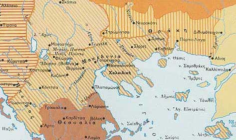

|

«Επήραμε και την Καβάλα μας
τας Σέρρας τας ωραίας και τη Δράμα
που τας κατείχε αυτός ο Βούλγαρος …»
(από τραγούδι της περιοχής)
Με τη λήξη του Β΄ Βαλκανικού Πολέμου το ελληνικό κράτος είχε επεκταθεί μέχρι τον ποταμό Νέστο, ενώ η ηττημένη Βουλγαρία διατήρησε τη Δυτική Θράκη. Τα νέα σύνορα μεταξύ των αντιμαχόμενων πλευρών επικυρώθηκαν με τη Συνθήκη του Βουκουρεστίου (1913). Με το πρωτόκολλο της Φλωρεντίας (1914) παραχωρήθηκε στο νεοσύστατο αλβανικό κράτος η Βόρεια Ήπειρος και στην ελληνική πλευρά δόθηκαν ως αντάλλαγμα τα νησιά του Αιγαίου εκτός από την Ίμβρο και Τένεδο.
|
|